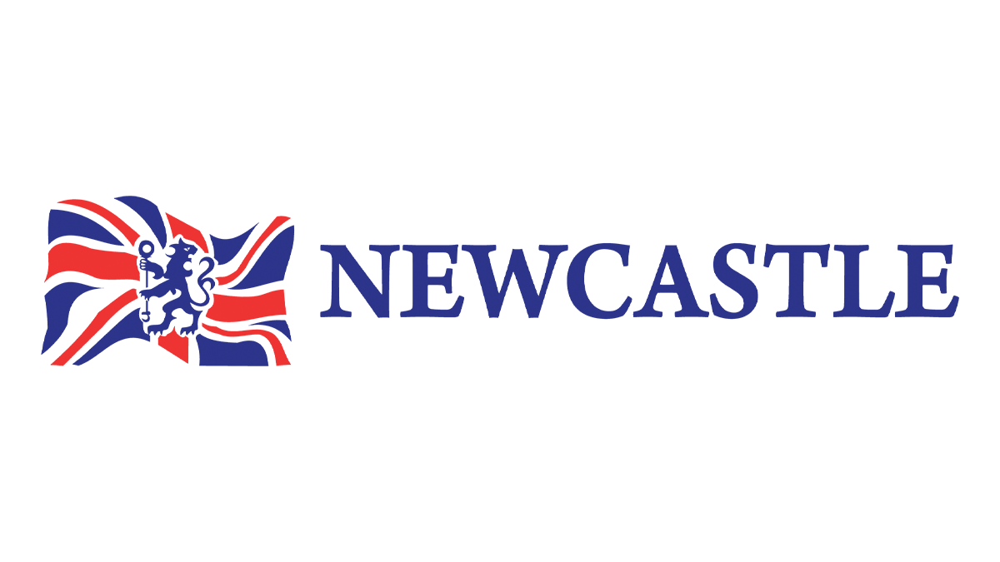

1º Semestre - 2024
No primeiro semestre, comecei minha jornada na programação, além de explorar redes de computadores e a base da computação.
- ✔️ Arquitetura de Computadores
- ✔️ Pensamento Computacional
- ✔️ Redes de Computadores
- ✔️ Introdução à Programação em C
2º Semestre - 2025
Agora estou avançando para Python, Big Data e Banco de Dados, me aprofundando ainda mais na área de tecnologia.
- 📌 Paradigmas de Linguagens de Programação em Python
- 📌 Banco de Dados
- 📌 Estrutura de Dados
- 📌 Big Data em Python
- 📌 Computação em nuvem
Aprendizado de Inglês

Estou estudando inglês na Newcastle para melhorar minhas oportunidades no setor de tecnologia.
Minhas Certificações
- 📜 Excel Avançado - Senai, 40h
- 📜 Power BI Expert - Viscari, 30h
- 📜 Estratégias de Supply Chain - Senai, 8h
- 📜 Microsoft Office Specialist Associate - Senai, 80h
- 📜 Lógica da Programação - Senai, 14h